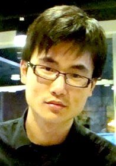

CS 6501/4501: Vision and Language | Fall 2020
Course Description: Visual recognition and language understanding are two challenging tasks in AI. In this course we will study and acquire the skills to build machine learning and deep learning models that can reason about images and text for generating image descriptions, visual question answering, image retrieval, and other tasks. On the technical side we will leverage models such as recurrent neural networks (RNNs), convolutional neural networks (CNNs), and transformer networks (e.g. BERT), among others.
Learning Objectives: (a) Develop intuitions about the connections between language and vision, (b) Understanding foundational concepts for representation learning for both images and text, (c) Become familiar with state-of-the-art models for tasks in vision and language, (d) Obtain practical experience in the implementation of these models.
Prerrequisites: It is recommended to have had a prior class in any of the following: Machine Learning, Computer Vision, Deep Learning for Visual Recognition, Natural Language Processing, Artificial Intelligence, or similar. Students are encouraged to complete the following activities before the first lecture: Completing this [Primer on Image Processing], and the tutorial and assignment on [Image Classification] from the Deep Learning for Visual Recognition class.
Schedule
| Date | Topic | |
|---|---|---|
| Tue, Aug 25th | Introduction to Vision and Language. | |
| Thu, Aug 27th | Machine Learning Primer | |
| Tue, Sep 1st | Computer Vision Primer | |
| Thu, Sep 3rd | Natural Language Processsing Primer | |
| Tue, Sep 8th | Recurrent Neural Networks (RNNs, LSTMs, GRUs) | |
| Thu, Sep 10th | Image Captioning Models and Datasets (Show-and-Tell, Show-Attend-and-Tell) | |
| Tue, Sep 15th | Referring Expressions (Module Networks - MAttNet) | |
| Thu, Sep 17th | Transformer Models and Self-Attention (BERT, GPT, XLNet) | |
| Tue, Sep 22th |

Guest Lecture: Vision and Language Transformers (UNITER, VilBERT, VisualBERT)
Licheng Yu, Research Scientist at Facebook AI
Previously researcher at Microsoft and part of the team behind UNITER and MattNet.
|
|
| Thu, Sep 24th | Visual Question Answering | |
| Tue, Sep 29th | Visually Grounded Explanations | |
| Thu, Oct 1st | Visual Common Sense Reasoning | |
| Tue, Oct 6th |

Guest Lecture: Biases in Vision and Language: Visual Question Answering
Kushal Kafle, Research Scientist at Adobe Research
Previously at RTI and extensive work in vision and language and VQA.
|
|
| Thu, Oct 8th | Biases in Vision and Language Models - Captioning | |
| Tue, Oct 13th | Video Captioning and Video Question Answering | |
| Thu, Oct 15th | Text2Scene Synthesis and Generation | |
| Tue, Oct 20th | Vision-Language Navigation as a Sequence to Sequence Task | |
| Thu, Oct 22th | Reinforcement Learning-based Vision-Language Navigation | |
| Tue, Oct 27th | Instructional Language in Vision | |
| Thu, Oct 29th | Interactive Image Retrieval: The Drill-down Model | |
| Tue, Nov 3rd | Multimodal Machine Translation | |
| Thu, Nov 5th | Visually Grounded Dialogs | |
| Tue, Nov 10th | Open Problems on Vision and Language Research I | |
| Thu, Nov 12th | Open Problems on Vision and Language Research II | |
| Tue, Nov 17th | Project Presentations | |
| Thu, Nov 19th | Project Presentations | |
| Tue, Nov 24th | Project Presentations |
Disclaimer: The professor reserves to right to make changes to the syllabus, including assignment due dates. These changes will be announced as early as possible.
CS4501 Grading: Assignments: 300pts (2 assignments: 150pts + 150pts), Class Project: 600pts, Peer Reviews: 100pts. Default grade cutoffs: A+ (1000pts), A (930pts), A- (900pts), B+ (870pts), B (830pts), B- (800pts), C+ (770pts), C (730pts), C- (700pts), D+ (670pts), D (630pts), D- (600pts).
CS6501 Grading: Assignments: 300pts (3 assignments: 100pts + 100pts + 100pts), Class Project: 600pts, Peer Reviews: 100pts. Default grade cutoffs: A+ (1000pts), A (930pts), A- (900pts), B+ (870pts), B (830pts), B- (800pts), C+ (770pts), C (730pts), C- (700pts), D+ (670pts), D (630pts), D- (600pts).
Late Submission Policy: No late assignments will be accepted in this class. Unless the student has procured special accommodations for warranted circumstances.
Academic Integrity Statement: "The School of Engineering and Applied Science relies upon and cherishes its community of trust. We firmly endorse, uphold, and embrace the University’s Honor principle that students will not lie, cheat, or steal, nor shall they tolerate those who do. We recognize that even one honor infraction can destroy an exemplary reputation that has taken years to build. Acting in a manner consistent with the principles of honor will benefit every member of the community both while enrolled in the Engineering School and in the future. Students are expected to be familiar with the university honor code, including the section on academic fraud."
Accessibility Statement: "The University of Virginia strives to provide accessibility to all students. If you require an accommodation to fully access this course, please contact the Student Disability Access Center (SDAC) at (434) 243-5180 or sdac@virginia.edu. If you are unsure if you require an accommodation, or to learn more about their services, you may contact the SDAC at the number above or by visiting their website at https://www.studenthealth.virginia.edu/student-disability-access-center/about-sdac."